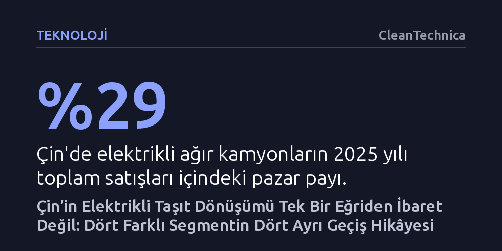

TEKNOLOJI · CleanTechnica · 2026-10-18
Çin’de elektrikli dönüşüm tek bir oranla ölçülemez; şehir içi otobüsler eski bataryalarını yenileme aşamasına geçerken ağır kamyonlar ve otomobiller hızla yayılıyor. Şehirlerarası otobüslerin geride kalması ise bir başarısızlık değil, yolcu talebini yüksek hızlı trenlerin devralmış olmasının doğal bir sonucu.
Elektrikli dönüşümün başarısını tek bir ulusal satış oranı üzerinden okumak yerine, her taşıt türünün kendi kullanım iktisadı ve mevcut ulaşım altyapısıyla birlikte değerlendirilmesi gerektiğini gösteriyor.

Çin'in elektrikli araç dönüşümünü değerlendirirken genellikle tek bir manşet veriye odaklanılıyor: elektrikli araçların toplam pazar payı. Oysa tüm taşıtları aynı sepete koyan bu genel oran, sahada olup biteni aydınlatmaktan çok gizliyor. Çin'de bugün tek ve yekpare bir elektrikli dönüşüm yaşanmıyor; şehir içi otobüsler, binek otomobiller, ağır ticari kamyonlar ve şehirlerarası yolcu otobüsleri tamamen farklı hızlarda, farklı ekonomik gerekçelerle ve farklı altyapı koşullarında ilerliyor.
Bu farklılaşmanın temelinde, her taşıt türünün günlük çalışma biçimi, kullanım yoğunluğu ve karşı karşıya olduğu alternatif ulaşım türleri yatıyor. Özel bir otomobil vaktinin büyük kısmını park halinde geçirirken, ağır bir kamyon ya da belediye otobüsü neredeyse gün boyu durmaksızın çalışıyor. Dolayısıyla her segmentin yatırım maliyetini geri çıkarma mantığı birbirinden kökten ayrılıyor. Çin'in ulaştığı aşama, dönüşümün tek bir başarı eğrisi üzerinden değil, yapılan işin niteliğine göre şekillenen çoklu patikalar üzerinden okunması gerektiğini kanıtlıyor.
Şehir içi otobüsler, Çin'in elektrifikasyon serüveninde ilk dönüm noktasını oluşturdu. Bugün Çin kentlerinde yeni alınan belediye otobüslerinin neredeyse tamamı elektrikli. Artık yerel yönetimlerin gündemi dizel bir otobüsü elektrikli olanla değiştirmek değil; ilk büyük dönüşüm dalgasında satın alınan eski elektrikli otobüslerin yerine hangi yeni modelin alınacağı sorusuna yanıt aramak. Uluslararası Enerji Ajansı'nın (IEA) verilerine göre Çin'deki 680 bini aşkın elektrikli otobüsün yaklaşık yüzde 70'i 2020 yılından önce yollara çıkmıştı. Dolayısıyla pazar artık ilk geçişi değil, rutin filo yenileme ve çekiş bataryalarını değiştirme evresini yaşıyor. Devlet politikaları da artık teknolojiyi kabul ettirmeye değil, bu yenileme döngüsünü desteklemeye odaklanıyor.
Binek otomobil pazarında ise bambaşka bir olgunluk tablosu var. 2025 yılı itibarıyla Çin'de satılan yeni otomobillerin yarısından fazlasını elektrikli modeller oluşturdu ve tüketicilerin önünde 700'e yakın farklı seçenek bulunuyordu. Daha da çarpıcı olanı, IEA tahminlerine göre satılan bataryalı elektrikli araçların yaklaşık yüzde 70'inin, herhangi bir devlet teşviki hesaba katılmasa dahi benzinli muadillerinden daha ucuza gelmesiydi. Elektrikli otomobil Çinli tüketici için artık niş veya çevreci bir alternatif olmaktan çıkıp pazarın ana akım ve standart tercihi haline gelmiş durumda.
Ağır ticari kamyonlar mutlak pazar payı bakımından otomobillerin gerisinde görünse de dönüşüm hızında tüm kategorileri geride bırakıyor. 2025'te Çin'de satılan ağır kamyonların yaklaşık yüzde 29'u elektrikliydi; bu da pazar payının bir önceki yıla göre neredeyse ikiye katlandığı anlamına geliyor. Ağır vasıtaların bu denli hızlı elektrikleşmesi tesadüfi bir yayılma değil; limanlar, maden ocakları, çelik fabrikaları ve sanayi lojistiği gibi operasyonel rotaları son derece belirgin alanlarda yoğunlaşıyor.
Bu durum ticari araç iktisadının temel bir kuralını görünür kılıyor. Yılda sadece birkaç bin kilometre yapan bir binek araçta yakıt tasarrufu kendini çok yavaş amorti ederken, vardiyalı çalışan ve yüksek kilometre yapan ağır bir kamyonda düşük enerji ve bakım maliyetleri yatırım getirisini hızla pozitife çeviriyor. Kamyonların belirli lojistik koridorlarında veya şirket merkezlerindeki garajlarda şarj edilebilmesi ya da dakikalar içinde batarya değişim istasyonlarından yararlanabilmesi, altyapı maliyetlerini de yönetilebilir kılıyor.
Aynı mantığın şehirlerarası yolcu otobüslerinde neden işlemediği ise ilk bakışta bir çelişki gibi görünebilir. 2025 yılında elektrikli şehirlerarası otobüslerin satış payı güçlü bir büyüme kaydetmesine rağmen yalnızca yüzde 10 civarında kaldı. Ancak bu yavaşlık bir başarısızlık ya da teknolojik yetersizlik işareti değil. Şehirlerarası otobüsler sadece daha büyük batarya ihtiyacıyla boğuşmuyor; Çin'in on yıllar önce ölçeklendirdiği devasa bir başka elektrikli teknolojiyle, yani yüksek hızlı trenlerle rekabet ediyor.
Çin, 2025 yılını 50 bin kilometreyi aşan bir yüksek hızlı demiryolu ağıyla tamamladı ve demiryolu sistemi yıl boyunca 4,5 milyardan fazla yolcu taşıdı. Nüfusu 500 bini geçen neredeyse her şehre ulaşan bu ağ, 500 kilometrelik mesafeleri bir-iki saatte, 1.000 kilometrelik hatları ise yaklaşık dört saatte katediyor. Yoğun yolcu koridorlarının trenlere kayması nedeniyle şehirlerarası otobüsler artık her uzun mesafeli seyahati üstlenmek zorunda değil. Dolayısıyla bir taşıt türünün elektrikli payının düşük kalması, nihai amacın her aracı zorla elektriğe dönüştürmek değil, fosil yakıt tüketimini en verimli ulaştırma sistemiyle azaltmak olduğunu hatırlatıyor.
Çin deneyimi, ulaşımın karbonsuzlaşması sürecinde tek bir pürüzsüz geçiş eğrisi aramanın hatalı bir varsayım olduğunu ortaya koyuyor. Farklı çalışma saatlerine, yük kapasitelerine ve güzergâh modellerine sahip taşıtların aynı hızda elektrikleşmesini beklemek gerçekçi değil. Şehir içi otobüsler kamu alımı ve sabit hat avantajıyla dönüşümü ilk tamamlayan grup olurken, binek araçlar batarya maliyetlerinin düşmesiyle ucuzladı; ağır kamyonlar ise yüksek kilometrenin getirdiği işletme tasarrufuyla yükselişe geçti.
Dünyanın geri kalanındaki politika yapıcılar için bu tablodan çıkacak en net ders, kamu kaynaklarının harcanma biçimidir. Bütün taşıt kategorilerine eşit ve körlemesine teşvik dağıtmak yerine, elektrifikasyonun kullanım özelliklerine doğrudan uyduğu alanları tespit etmek gerekiyor. Garaj bazlı filolar, yüksek kullanım oranına sahip ağır kamyonlar ve öngörülebilir rotalarda çalışan ticari araçlar, altyapı darboğazları çözüldüğünde en hızlı sonuç veren başlangıç noktalarını oluşturuyor.